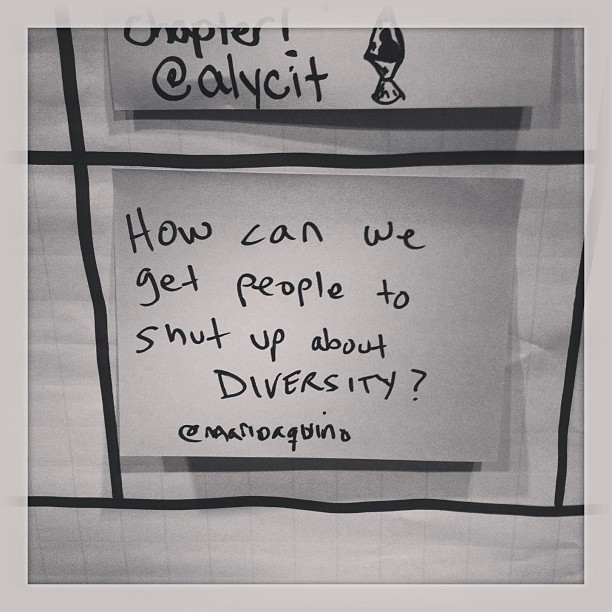

Thoughts on a diversity discussion
Note: I strongly recommend watching Lindsey and Steve’s Anti-Oppression 101 talk before reading my post if you’re not familiar with the topic. It will give you a much better background for what I have to say. This is not a 101 post, and I am not going to rehash the content of their talk here.
There was a diversity-focused open space at Codemash this year. It got pretty heated near the end, and I had a lot of feelings about it. I am sharing some of them for many of the same reasons I spoke up at the open space. I care about this topic and not in a theoretical sense. This issue is very real for myself and many others on a daily basis.

The title of the open space was “How can we get people to shut up about diversity?” The intent was essentially “how can we improve diversity to such a degree that we don’t have to talk about it any more” – a laudable, but perhaps overly ambitious goal. A lot of different thoughts and perspectives came up during the lengthy discussion. I am going to focus on those that I think are worth analyzing further.
Minority-Only Spaces
One of the topics that came up was whether we should have minority-only spaces in the tech community. People who were for them (myself included) were largely on the side of them existing alongside, but not as a replacement for, other spaces. Basically, they serve the purpose of providing a safe space for a group of people with similar backgrounds to discuss their experiences. Those who were against such spaces felt they were exclusionary and voiced concerns that those in the majority would have difficulty learning about the plight of minorities if they were not given access.
It is difficult, if not impossible, to have a space that serves both the purpose of fostering a safe space for minorities to have discussions and educating the majority about the situation. What followed later in the open space was a prime example of why these safe spaces are still necessary.
Harassment
A major issue that came up during the discussion was harassment. Harassment can mean a lot of different things to different people – for the sake of this discussion, my rough definition is “unwanted and/or unacceptable interactions that make someone uncomfortable and diminish their enjoyment of an event.”
One of the women in attendance at the open space had the courage to share such an experience that she had at the conference. She mentioned that the experience made her uncomfortable and was upset enough that she considered leaving early. I am not going to speak to the details of her situation out of respect for her privacy and because they are not terribly relevant. What is worth evaluating is the discussion that followed.
The conversation took a turn towards how should we handle harassment at our events. During this discussion, a fairly well-known member of the programming community joined the open space. This person, who had not participated in the first half of the open space, quickly took over and steered the conversation. He stated that if put in a similar situation, he would stand up for himself and tell the harasser to leave him alone. Not only did he state that he would do this, but he also felt this was the responsibility of any person being harassed.
At this point, I felt it was relevant to explain that a white male prominent in the programming community is not being put in the same situation as a woman attending the conference. The privilege and power differentials are completely different, and it is bullshit to act like they are the same. I was then yelled at by another man in attendance for “making assumptions” about the speaker. At the time, I apologized to move things along and avoid derailing the conversation, but I find this deeply problematic. Despite popular opinion to the contrary, pointing out someone’s privilege in a situation is not an insult.
It’s privilege that says it’s the victim’s responsibility to make a harasser go away, and that the situation will turn out well if they try to do so. What may be reasonably easy and safe for one person may not be for another. Women are often socialized differently than men to handle conflict, and the harassment they receive does not always take the same form. If you want to get an idea of what women often deal with, try reading @EverydaySexism. It isn’t exaggeration. This is the daily lived experience for many women. The situation is not the same, and claiming so is misguided in the best of cases and harmful in the worst.
The conversation continued on the track of it being the harassed person’s responsibility to stop harassment. The woman who shared her experience looked increasingly upset as this continued. I don’t blame her. This conversation essentially said it was her fault that the harassment continued. That it was her job to stop it. This is often referred to as victim blaming. It is very problematic in a variety of ways including: upsetting the victim, shifting blame from the actual responsible party (hint: it’s the person doing the harassing), and decreasing the likelihood of someone coming forward to report harassment in the future.
Anti-Harassment Policies
There were also some discussions about the pros and cons of having an anti-harassment policy. Roughly the same people who expected the person being harassed to resolve the situation also stated that these policies will not empower the harassed to stop the situation or report what happened. That is a pretty big assumption, especially considering the type of people most likely to be harassed are largely the ones who have been asking for the policies in the first place.
My frustration here stems from the same place as my frustration with the victim blaming. It was people speculating about the experiences of others and dictating how those people should feel about and handle those experiences. We all do this from time to time. I’m guilty too. However, it is especially troubling when the point of the conversation is to make said people feel more comfortable attending our events.
Barrier to Entry
One of the women in attendance pointed out that putting the onus on victims, particularly women, to handle problems may lead to them not attending conferences in the future. The response to this from some was essentially “good, then they shouldn’t attend.” I suppose that is one way to make people shut up about diversity – just stop including them unless they have the fortitude to actively fight off harassment.
I found it really interesting that the women in the conversation, particularly those speaking up, were largely the strong, outspoken type (I think a few even self-labeled as “assholes”). I include myself in this group. We’re great at calling out bullshit. I love people like that. They are awesome, but not all of us start out that way and other types of people are awesome too.
Many of us had to grow a thick skin to be a part of this community. That unspoken thick-skinned requirement is likely part of the reason minorities don’t attend these events. Studies show issues like this are part of the reason minorities leave tech mid-career and don’t come back. The barrier to entry is too high. If you want to make diversity such a nonissue that we don’t talk about it any more, stop calling for the maintenance of that barrier.
What Next?
If you want us to shut up about diversity, you have to do more than tell us to shut up about it. You have to do more than tell us it’s our responsibility to handle the situation. A lot of us are already trying really hard. We run groups and teach classes and mentor and encourage new speakers and even sometimes help advertise your events. We’re trying to do all these positive things to improve the situation, but you have to help too. Helping isn’t telling us that our experiences and perspectives are invalid. Helping isn’t shouting us down. Helping isn’t victim blaming. Helping isn’t denying us safe spaces where we can likely avoid being shouted down or victim blamed.
So what can you do? I recommend reading Ashe’s post “So you want to put on a diverse, inclusive conference.” She covers this topic really well. There’s also a bunch of other great posts out there. I recommend reaching out to real live people who fit into the demographics you are interested in. Ask us for help!
One last recommendation: shake things up a little bit and make room for new people (minority or not). Some of the old guard is pushing hard for more of the same. The saying goes that insanity is doing the same thing over and over again and expecting different results. Want us to shut up about diversity? Try something new.
P.S.
A lot of the discussions at the open space were good and productive. This post is largely about the second half of the discussion.
Much love to those who were helping fight the good fight in this discussion. Allies are very much a thing we need. <3
I want my tech to be more intersectional. I wish this discussion could have been inclusive of more demographics.